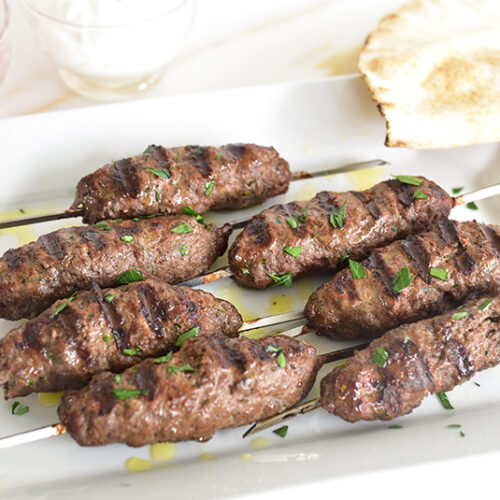

My favorite Kafta recipe

Description
When it comes to grilling, we love our burgers and hot dogs, but we are definitely more partial to Lebanese style grilling, which includes grilled chicken kabobs, shish tawook and this Beef Kafta recipe. It’s perfect for grilling outdoors or on a grill pan and is so full of flavor, but only requires four basic ingredients: ground beef, onions, parsley and spices.
Ingredients
- 1/4 cup parsel
- 1 small yellow onion
- 1 pound ground beef
- 2 teaspoons 7 spice
- 1/2 kafta spices
Steps to prepare
- start with the parsel, remove the stems wash and dry them , and pulse in the food processor
- remove the parsley and set aside in a small bowl. No worries. if some remain in the bowl of the food processor
- Throw in one yellow onion in the food processor
- Put everything together and mix them with the beef
- Add the spices and mix them well